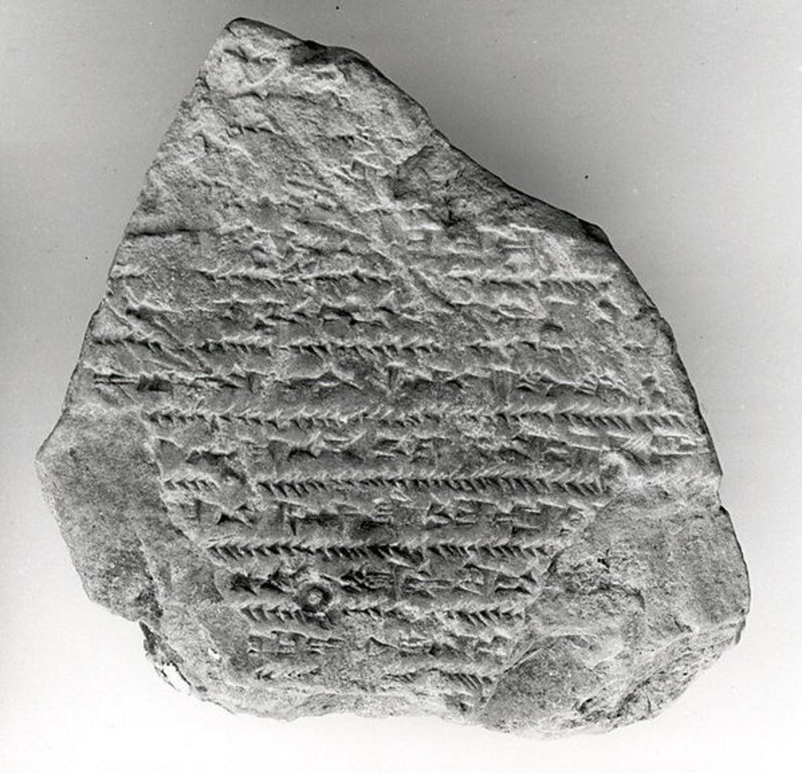
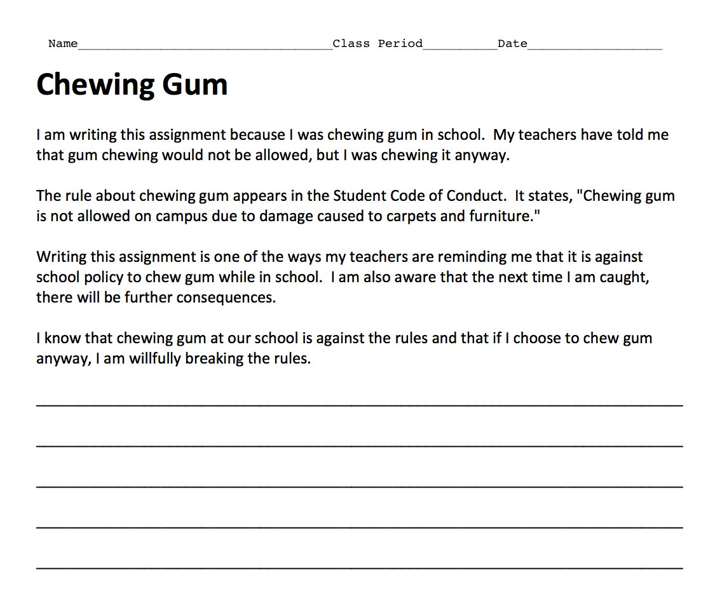
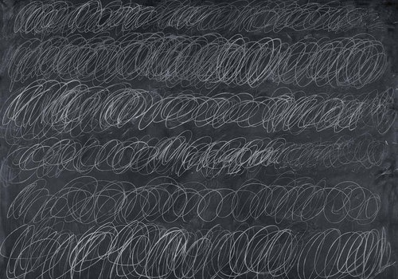

In Plato’s dialogue Protagoras, Socrates confronts the eponymous sophist in an argument concerning whether virtue can be taught.1 The argument begins when Socrates accompanies his student Hippocrates on a journey to the home of Callias, where Protagoras is staying; Hippocrates, a young aristocrat, wishes to enter the political sphere of Athens, and desires the instruction of Protagoras so that he might cultivate his virtue. Socrates is deeply skeptical of the sophist’s pedagogical capabilities–he firmly maintains that virtue is not teachable–and so he and Protagoras enter a lengthy and disjointed argument.
It’s often said that Socrates serves as a mouthpiece for Plato in many of the dialogues, and this–at least at first glance–seems to be the case in the Protagoras. Socrates espouses a rather pessimistic view concerning human politics: because virtue is not teachable, only a few of us will ever be experts, and in Athenian democracy their voices get drowned out anyway, because everyone thinks they’re virtuous. Plato, who had once desired to be involved in Athenian politics, had reason to be pessimistic: after all, his teacher Socrates had been executed by the Athenian government.
The sophists, on the other hand, believed that virtue can and should be cultivated. In fact, their livelihood depended on it; sophists like Protagoras made their living through offering young Greek men tutelage in virtue in exchange for a fee.2 For those who wished to enter politics, the ability to persuade others through rhetoric was understood as both essential and intertwined with virtue. When interrogated by Socrates about what Hippocrates will gain from Protagoras’s service, Protagoras’s reply sounds like curricular logic or self-help jargon: he speaks of life-management skills, and maximizing potential for success.
In the middle of the dialogue, Protagoras draws an extended case for the instructability of virtue through the example of a child’s upbringing, describing how moral lessons are instilled in the child through signals of reward and punishment. The argument is then encapsulated in a single metaphor: the laws of society define the boundaries of our behavior, and just as the student learns how to write by following the lines pre-inscribed in a tablet, so does he learn virtue by modeling his life off the laws prescribed by his polis. The young scribe learns to write through copying letterforms within the ruled lines of his master’s tablet, and learns virtue through copying the examples of his elders within the rules of social conduct. This metaphor–in which written boundary and social boundary converge into a single choking restraint–repeats itself many times in history, culminating in a late 20th-century absurdity known as the discipline packet.

Protagoras’s argument is notable for being one of the few extant examples that describe classical European methods of writing instruction, the others being found in the (much later) writings of Quintilian, Seneca, and Maximus of Tyre.3 In all, the technique remains fairly consistent: the pupils were given pre-inscribed guides–either parallel lines or faint outlines of letterforms–and instructed to copy over them. In the schools of Middle Kingdom Egypt, scribes learned by copying from textbooks called Kemyt, which contained idioms reinforcing societal norms.4 In ancient Syria, Sumerian scribes were trained from boyhood at schools known as Eduba; their days consisted of long hours copying cuneiform onto clay tablets, punctuated by beatings from the instructor. One student was forced to copy scholarly compositions while he was bound by bronze chains, most likely as a result of debt.5
When I was in Catholic school, I wrote lines on sheets of notebook paper. The content of the lines followed a standard formula: “I will not,” followed by whatever offense I had committed. These were terrible to write, but easy to game; you could speed up the process by just writing each letter straight down the page in columns.

Then I graduated to a public middle school. The first time I got lunch detention, I sat on a stage in front of the whole cafeteria and received a stapled packet containing the U.S. Constitution and Bill of Rights. I was instructed to copy the entire thing; the irony was not lost on me, even as a twelve-year-old. This was my first encounter with the discipline packet.
In all the historical cases heretofore mentioned, writing is functioning similarly to the Protagoran metaphor: technically and morally didactic, the repetitive motion of the hand instilling both virtue and literacy. Sometimes the writing was even intended to be read; in the case of the enchained young scribe, the authors suggest that he copied tablets in order to pay off his debt.5
But in modern examples, the writing sheds all pretense of improving chirographic skill. Instead, the instruction is entirely moral: in a more literal manifestation of Protagoras’s metaphor, the writing aims not to demonstrate how to craft your letters, but how to craft the conceptual framework by which you govern your behavior. A common technique in the discipline packet is to offer an idealized, first-person monologue concerning the offense; by copying it in writing, the monologue is channeled through the mind of the pupil. (Fig. 2.) Somewhere in this process, presumably, the idealized thoughts surrounding the offense become the student’s actual thoughts.
The writing also sheds all pretense of being normal writing. No one reads this discipline–writing. When lines are written in classic chalkboard-style, the teacher who dolled out the punishment doesn’t read every individual line–he might count them–but really the lines are looked at as a whole, an image left as evidence of repetitive labor.

Cy Twombly’s asemic chalkboard paintings–in which writing is reduced to pure repetition and physicality–are a useful analogue in this case. (Fig 3.) In both Twombly and schoolroom punishment, the lines are more recorded gymnastics than legible writing, documentation of physical and mental duress. There is very little physicality in the discipline packet, but it can be understood along similar lines: if you wrote it, you were forced to think it. In these cases, writing is used not for communication, instead as a means of asserting control over the student’s body and/or mind.
In 19th and early 20th century America, the Spencerian and (subsequently) the Palmerian methods of penmanship instruction reigned supreme.6 (Fig. 4.) In these handwriting techniques, mastery of the will over the mind and body was deemed essential for good penmanship–especially so in Palmer’s method, which was sometimes referred to as the “muscular movement system.”7 Through endless drill and repetition, restraint in writing became restraint in character; school officials looked towards good penmanship as bulwark against vice. An introduction to Spencer’s Practical Penmanship describes the author patiently practicing his writing until finally “…the representations of his hand were as pure and chaste and beautiful as the peerless conceptions of his mind. “8
Graphology, which purported to reveal psychological traits through analysis of the physical forms of handwriting, found widespread appeal among American schools and popular culture during the era of Spencer and Palmer. Books like The Revelation of Character in Handwriting claimed that graphology was a scientific means towards self-knowledge, and ordinary people underwent graphological examination for self-improvement.9 Graphology is now considered a pseudoscience^,^ and the Spencerian and Palmerian methods have long fallen out of favor; even their 1978 update–the D’Nealian method–is beginning to disappear in schools.10 But many of their underlying assumptions still persist in disciplinary techniques.
Mind mapping has replaced the graphological examination as the means by which Americans project their conception of self onto the page–or screen. Much like graphology, mind mapping brands itself in the language of self-help. A common exercise involves creating a diagram of “emotions, feelings, facts, desires, thoughts, goals, etc.” surrounding your conception of yourself; through creating the map, one heightens self-understanding and gathers motivation to achieve goals.11
Unlike copying a prefabricated inner-monologue about the event in writing, mind mapping forces the student to actually construct an original thought-process surrounding her offense. The only thing copied in these cases is the skeletal framework; already present on the page, it is presumably copied again in the student’s mind as a pattern of thought. The actual details of the offense are less important than the bounds of the rigid schema whose shape they must assume; in the case of Fig. 5, each negative behavior has precisely three causes and three consequences. Like rote copying on the chalkboard, these discipline packets are providing language for the student to employ in their self-conception; unlike rote copying, this language drops letters and penmanship in order to depict raw causality in minimalist, geometric form.
Is writing virtue virtuous? For that matter, is being forced to think virtuous thoughts virtuous? What unifies all of the examples thus far–from the kemyt of Middle Kingdom Egypt, to the mind-mapping discipline packet of 21st century America–is an assumption that by asking students to craft representations of virtue, they will somehow acquire virtue. Spencerian penmanship didn’t deliver virtue solely through brute enforcement of patience and restraint; the actual forms of the letters held virtue in their graceful lines.
Perhaps what most unites the sophists, the Spencerians, and the packet-wielding teachers of today is their belief in the power of their representations: that the things they put on the page, or the chalkboard, or the clay tablet are really a piece of them. The sophist Gorgias famously believed that human thought and discourse, logos, was a “powerful master” in shaping reality–in fact, it was the only reality we could know.f2^ Faith in that powerful master is precisely what is needed to believe that to change ourselves, we need only change the way we write; that we can attain a life of virtue by tracing lines on a wax tablet.
By the end of the Protagoras, the argument has grown so tangled that its two adversaries have swapped sides: Socrates argues that virtue is a form of knowledge, and thus teachable, whereas Protagoras argues that virtue is not knowledge, and thus unteachable. Acknowledging that they are simply arguing for the sake of argument at this point, the two of them cut off the dispute amicably, without reaching a conclusion. In another dialogue, the Meno, Socrates is again quizzed on whether or not virtue can be taught; in this case, Socrates reaches a conclusion contradictory to that of the Protagoras–that virtue exists in humans as a gift from the gods. Similarly, when discussing his own powers of virtue, Socrates provided a supernatural explanation. Beginning as a child, an inner voice spoke in his head–Socrates calls it a daimonion, or “divine something.” Whenever he was nearing a failure in virtue, it offered a command warning him away from the act; notably, it only ever turned Socrates away from acts, never towards them.1 One might imagine its imperatives beginning:
“I WILL NOT…”
“I WILL NOT…”
“I WILL NOT…”
“I WILL NOT…”
References
Hackett Pub.; 1997:746-790, 897, 29.
“This is what the most able, i.e., the richest, do. Their sons start going to school at the earliest age and quit at the latest age. And when they quit school, the city in turn compels them to learn the laws and to model their lives on them. They are not to act as they please. An analogy might be drawn from the practice of writing-teachers, who sketch the letters faintly with a pen in workbooks for their beginning students and have them write the letters over the patterns they have drawn. In the same way the city has drawn up laws invented by the great lawgivers in the past and compels them to govern and be governed by them. She punishes anyone who goes beyond these laws, and the term for this punishment in your city and others is, because it is a corrective legal action, ‘correction.’”
“I have a divine or spiritual sign which Meletus has ridiculed in his deposition. This began when I was a child. It is a voice, and whenever it speaks it turns me away from something I am about to do, but it never encourages me to do anything.”
Duke G. Sophists, Internet Encyclopedia of Philosophy.
Ieputmedu. 2016. Available at: http://www.iep.utm.edu/sophists/\#SH3c. Accessed October 9, 2016.
Muir J. A Note on Ancient Methods of Learning to Write. The
Classical Quarterly. 1984;34(01):236. doi:10.1017/s0009838800029517.
Williams R. Scribal Training in Ancient Egypt. Journal of the
American Oriental Society. 1972;92(2):214. doi:10.2307/600648.
Cohen YKedar S. Teacher–Student Relationships: Two Case Studies.
Oxford Handbooks Online. 2011. doi:10.1093/oxfordhb/9780199557301.013.0011.
"The ‘School Dialogues’ tell of a student chained up in the schoolhouse as punishment (Vanstiphout 1997: 590, ll. 150–153), while a report from 7th- century Nineveh tells of a prominent young man from Babylonia forced to work at copying tablets while in chains as a prisoner of the Assyrians (Fales and Postgate 1995: no. 156). The lot of our scribe Ribi-Dagan may have been the result of his being in debt, which he was forced to pay off by copying tablets."
Wajda S. Inscribing the self. American Quarterly.
1999;51(2):461-471. doi:10.1353/aq.1999.0021.
Palmer A. The Palmer Method Of Business Writing.
Spencer HSpencer P. Spencerian Key To Practical Penmanship. New
York: Ivison, Phinney, Blakeman; 1866.
Remont F. The Revelation Of Character In Handwriting. Times Mirror
Printing and Binding House; 1918.
Driver R, Buckley M, Frink D. Should We Write Off Graphology?.
International Journal of Selection and Assessment. 1996;4(2):78-86. doi:10.1111/j.1468-2389.1996.tb00062.x.
How to Mind Map Yourself. wikiHow. 2016. Available at:
http://www.wikihow.com/Mind-Map-Yourself. Accessed October 9, 2016.
Images
Fig. 1. The Metropolitan Museum of Art. Cuneiform Tablet: School Exercise Tablet. Ca. Late 1St Millennium B.C.. Available at: http://www.metmuseum.org/art/collection/search/321985. Accessed October 9, 2016.
Fig. 2. Manis C. Discipline Packet. 1st ed. Teacher-written Eduware;
Fig. 3. Twombly C. Cold Stream.; 1966.
Fig. 4. Wikimedia. Spencerian Example.; 1884. Available at: https://commons.wikimedia.org/wiki/File%3ASpencerian\_example.jpg. Accessed October 9, 2016.
Fig. 5. ThinkingMaps. Behavior Reflections.; 2016. Available at: http://thinkingmaps.com/discipline-desired-behaviors/. Accessed October 9, 2016.
Fig. 6. Autism Teaching Strategies. CBT Children's Anger Worksheet.;
{kind=link}